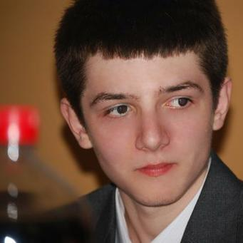

Hackathon.ro · Agregare socială
Simplify
Agregator modular de rețele sociale, realizat la Hackathon.ro. Repository creat în octombrie 2012.
Echipa / Proiectul Pagini Web
Inginer software. Constructor de idei.
Peste 15 ani în IT, de la dezvoltare web și proiecte open source la sisteme software și inteligență artificială. Experiență tehnică pusă în slujba lucrurilor care merită construite.

15+ ani
de experiență în IT
Software + AI
de la fundație la noile instrumente
Open source
proiecte, experimente și contribuții
01 / Perspectivă
Cunoscut online ca sarbull și pe GitHub ca Cezar Sîrbu, Nicolae-Cezar a trecut prin dezvoltare web, inginerie software în organizații mari și contribuții la proiecte publice. Parcursul profesional include CustomSoft, OkapiStudio, Deutsche Bank, Thales, ING Hubs Romania și Adobe.
Interesul pentru probleme de inginerie, performanță și software clar, ușor de întreținut, leagă aceste etape. Astăzi, direcția continuă cu rolul de AI-Native Software Engineer la Adobe și cu preocuparea PPW pentru agenți IA și experiențe digitale utile.
Profilul profesional pe LinkedIn02 / Parcurs profesional
Rolurile și perioadele din profilul LinkedIn, de la primele experiențe la inginerie software cu AI.
Vezi experiența pe LinkedIn— prezent
AI-Native Software Engineer
Rol actual—
Software Engineer
—
Software Engineer
—
Software Engineer
—
Software Engineer
—
Junior Software Engineer
—
Voluntar
Fundația tehnică / 2011–2015
Universitatea Politehnica din București
Studii de licență în ingineria calculatoarelor · 2011–2015
Formare continuă: „Personal effectiveness for IT professionals” — Global Knowledge, octombrie 2022.
03 / Experiență tehnică
Competențe declarate pe LinkedIn și tehnologii documentate în proiectele publice de pe GitHub.
04 / Cod la vedere
De la proiectele WebDev și universitare la API-uri și vizualizare de date. Repere din portofoliul public, documentate pe LinkedIn și GitHub.
Hackathon.ro · Agregare socială
Agregator modular de rețele sociale, realizat la Hackathon.ro. Repository creat în octombrie 2012.
JavaScript · HTML5 · CSS · jQuery
Joc de Scrabble online realizat în cadrul WebDev. Un reper al începuturilor în dezvoltarea web și al lucrului într-un proiect de echipă.
Ruby · Ruby on Rails
Proiect de monitorizare a prețurilor în Ruby on Rails. Repository creat în decembrie 2013.
Python · Django · Gmail
Aplicație webmail în Django, cu autentificare Gmail, realizată ca proiect universitar. Repository creat în ianuarie 2014.
PHP · Laravel 5
Aplicație pentru gestiunea timpului, construită cu Laravel 5. Repository creat în decembrie 2014.
JavaScript · Node.js · Multiplayer
Joc multiplayer interactiv în Node.js pentru minimum trei jucători. Repository creat în martie 2015.
PHP · MVC
O implementare simplă a arhitecturii Model–View–Controller în PHP, care explorează organizarea unei aplicații web.
JavaScript · Node.js · API
Un proiect de framework MVC în Node.js pentru API-uri simple. O explorare a structurii aplicațiilor pe partea de server.
JavaScript · AngularJS
Un editor de text pentru aplicații AngularJS, parte din explorarea componentelor și a interfețelor web reutilizabile.
TypeScript
Un proiect public în TypeScript, păstrat în portofoliu ca reper al lucrului cu limbaje și instrumente pentru aplicații web.
TypeScript · Grafuri
Soluție generică pentru reprezentarea grafurilor, afișată între proiectele fixate pe profil. Un reper al contribuțiilor în ecosistemul open source.
Pe lângă proiectele personale și voluntariatul ROSEdu, Cezar Sîrbu / sarbull este menționat în lista oficială de maintaineri Egeria.
Parcursul profesional și studiile sunt documentate pe LinkedIn. Proiectele și tehnologiile pot fi explorate pe GitHub. Fotografia provine din profilul public GitHub.
Profil verificat la .
Următorul pas